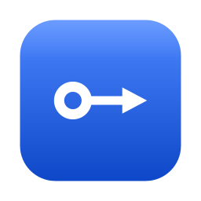
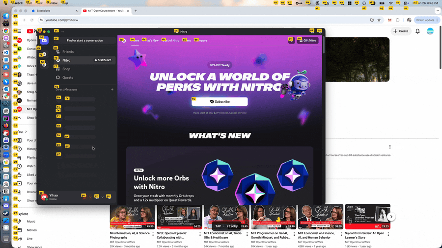
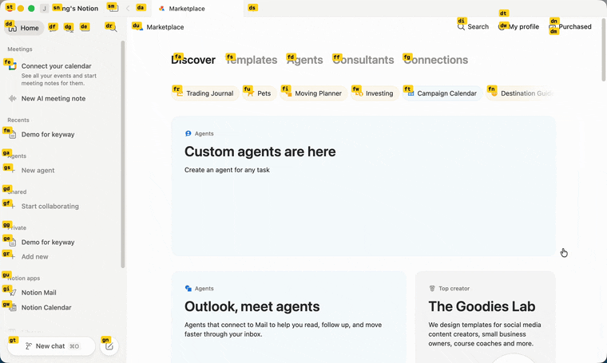
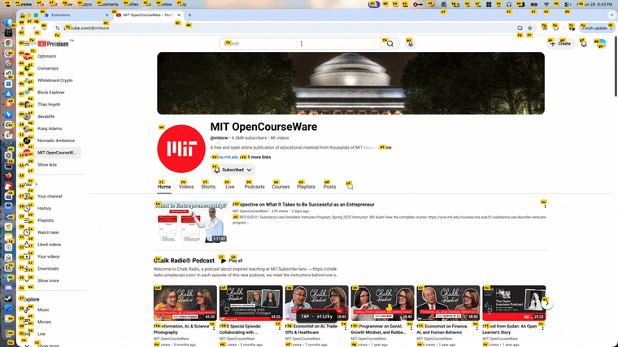
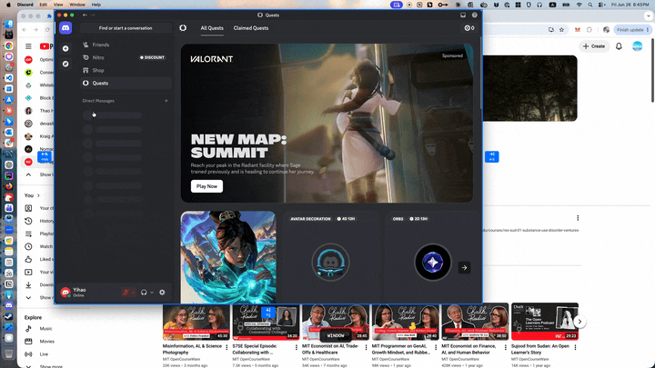

Keyway labels everything clickable on screen — type the label, it clicks. Then scroll, drag, search, and move windows without ever touching the mouse. Free, open source, and fully on-device.

Press Caps Lock → labels appear on everything clickable → type one → it clicks.
Electron apps and web views (Slack, VS Code, Discord) expose almost nothing to the macOS accessibility API. Keyway falls back to an on-device vision model to find targets from pixels — plus a browser extension that reads the DOM directly.
Not limited to clicking what it can label: warp the pointer onto any target, nudge it with hjkl, double-tap a direction to jump across screens, then left / right / double-click.
Hint-click, scroll, drag-and-drop, window move & resize, and text search — all sharing the same hjkl muscle memory. Adding a capability means adding a mode.
Runs entirely on your machine. No telemetry, no accounts. A free, AGPL-3.0 alternative to Homerow, with Vimium-style navigation across the whole desktop.

Drive the real cursor: warp onto a target, nudge with hjkl, then click.

Precise, DOM-based hints on real web pages — with sticky mode that re-hints as the page changes.

Move and resize windows from the keyboard — no mouse drag needed.